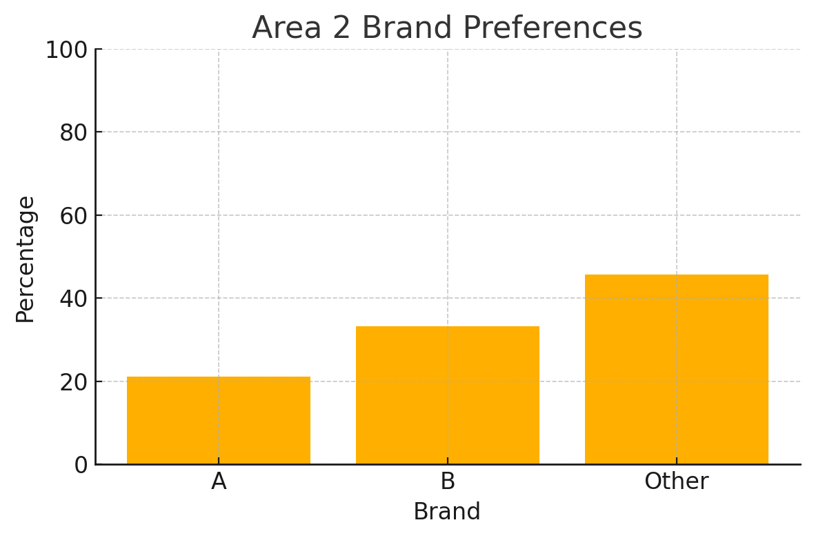
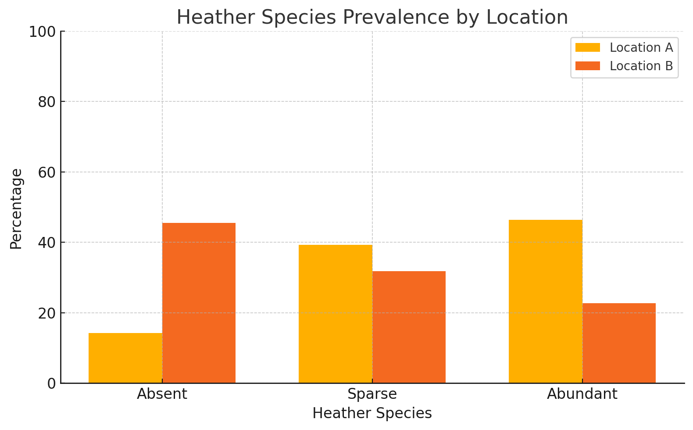
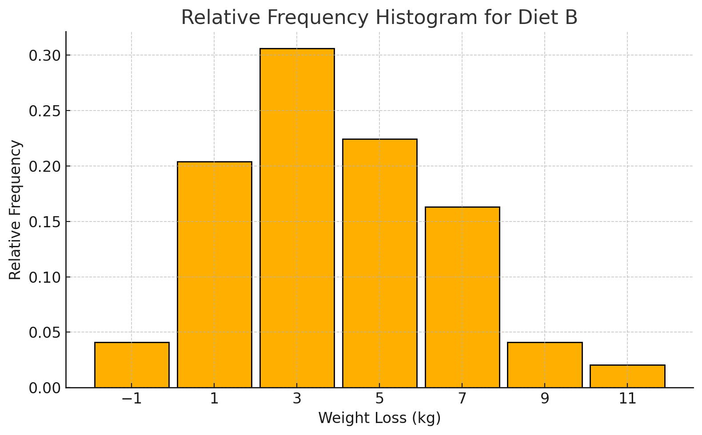

Research Methods and Professional Practice
Learning Outcomes
▶
1- Appraise the professional, legal, social, cultural and ethical issues that affect computing professionals.
2- Appraise the principles of academic investigation, applying them to a research topic in the applicable computing field.
3- Evaluate critically existing literature, research design and methodology for the chosen topic, including data analysis processes.
4- Produce and evaluate critically a research proposal for the chosen topic.
Reflective Activity 1 Week 1
▶
Reflection on the Global Governance of Generative AI: A Call for Collaborative Regulation
The rapid emergence of generative AI technologies from late 2022, particularly large language models such as GPT-4 and image generators like Midjourney,
has significantly reshaped industries, knowledge production, and public discourse. While artificial intelligence itself is not a novel concept, the
acceleration in capabilities, accessibility, and global integration of generative systems demands urgent revaluation of governance frameworks. As Correa et al. (2023) observe, one of the most pressing challenges in managing this revolution is not technological advancement, but ethical and regulatory coherence across diverse sociopolitical landscapes.
In their analysis, Correa et al. highlight a critical barrier: the absence of global consensus on the values underpinning AI governance. The authors emphasize that current efforts are fragmented, with countries developing divergent approaches reflecting national priorities, ideologies, and levels of technical maturity. This diversity, while expected, complicates the task of establishing shared norms and operationalising ethical principles. Deckard (2023) echoes this concern, warning against the rise of “algorithmic exceptionalism” where powerful actors—both corporate and state-based—shape AI development in ways that reinforce existing inequalities.
From my perspective, the solution lies in creating a tiered, collaborative, and adaptive regulatory framework that respects local contexts while promoting universal ethical standards. Inspired by existing multilateral efforts such as the OECD AI Principles and UNESCO’s Recommendation on the Ethics of AI, I propose a model similar to international environmental treaties: countries commit to a baseline set of AI principles—such as transparency, accountability, non-maleficence, and fairness—but have flexibility in how they operationalise these values nationally.
A global observatory or “AI Ethics Assembly” could oversee this process, modelled after the IPCC for climate science. This independent, interdisciplinary body would catalogue national AI policies, identify areas of consensus and divergence (as Correa et al. advocate), and offer policy guidance backed by empirical data and ethical deliberation. Such a structure would empower policymakers to make evidence-based decisions while fostering transnational dialogue.
Legal implications of this proposal are significant. Current data protection laws (e.g., GDPR in the EU, CCPA in California) offer partial blueprints for regulating generative AI, particularly regarding data use and individual rights. However, generative AI also introduces novel legal questions around authorship, misinformation, liability, and employment. In professional contexts, software engineers and data scientists must navigate these legal grey zones daily. For example, if an AI generates biased code or offensive content, who is responsible: the developer, the user, or the model provider? A coherent international legal framework would help mitigate these uncertainties by clearly delineating accountability and ensuring rights-based protections.
Socially, the unregulated expansion of generative AI risks deepening global inequalities. Many low- and middle-income countries lack the infrastructure or expertise to engage meaningfully in AI development or policy-making. Without inclusive governance mechanisms, these nations may become passive consumers of technologies designed elsewhere, subject to digital colonialism. Deckard (2023) warns of this asymmetry and urges decolonial approaches to AI ethics—those that prioritise local knowledge systems and challenge the dominance of Global North narratives. My proposed global AI observatory must therefore prioritise inclusive participation and support capacity-building in underrepresented regions.
Ethically, the stakes are no less profound. As Correa et al. stress, normative debates around AI often remain abstract and detached from practical implementation. Yet the ethical dilemmas posed by generative AI are anything but abstract: deepfakes used in political campaigns, synthetic media in online abuse, and AI-generated disinformation are already impacting real lives. A shared ethical framework must be both principled and pragmatic—sensitive to the context-specific nature of harm while maintaining a commitment to justice, dignity, and autonomy.
For computing professionals, this evolving landscape imposes new responsibilities. Ethical reflexivity—the ability to critically assess one’s work and its broader implications—must become a core professional skill. Industry codes of conduct, such as those issued by the ACM or IEEE, should be updated to reflect the unique risks posed by generative systems. Educational curricula must also adapt, integrating modules on AI ethics, governance, and societal impacts alongside technical training. As a future computing professional, I recognise the need to remain engaged with ethical debates, advocate for responsible AI development, and resist the temptation to prioritise innovation over impact.
A final concern is the role of private companies, which currently drive much of the generative AI innovation. While firms like OpenAI, Google, and Meta have released voluntary guidelines and engaged in safety research, their commercial interests may not always align with public good. A robust public–private partnership is essential, wherein governments provide regulatory guardrails and civil society ensures accountability. Voluntary self-regulation alone is insufficient; binding policies must be enacted to ensure that AI development serves all of humanity—not just its wealthiest or most powerful factions.
In conclusion, generative AI has catalysed a paradigmatic shift in technology and society. The current global governance landscape, while active and evolving, lacks cohesion, inclusivity, and enforceability. A suitable course of action must balance international collaboration with national sovereignty, ethical clarity with contextual flexibility, and professional innovation with public accountability. Through an integrated approach—combining legal reform, social justice, ethical deliberation, and professional responsibility—we can shape a future where AI supports rather than undermines human flourishing.
References
• Correa, J. M., Gallo, A., & Pérez, L. (2023). Governing AI in a Global Context: Comparative Analysis and Strategic Pathways. [Provide full citation as per referencing style.]
• Deckard, M. (2023). Algorithmic Colonialism and the Ethics of AI. [Provide full citation.]
• OECD (2019). OECD Principles on Artificial Intelligence. [https://www.oecd.org/going-digital/ai/principles/]
• UNESCO (2021). Recommendation on the Ethics of Artificial Intelligence. [https://unesdoc.unesco.org/ark:/48223/pf0000381137]
• IEEE. (2020). Ethically Aligned Design. [https://ethicsinaction.ieee.org/]
Collaborative Learning Discussion 1
▶
Initial Post:
Case Study: The Therac-25 Accidents
The Therac-25 case, detailed by the Association of Computing Machinery (ACM), presents a seminal example in the ethics of software engineering.
Between 1985 and 1987, a series of accidents involving the Therac-25 radiation therapy machine resulted in severe injuries and deaths due to
massive radiation overdoses. The root cause was a software error—one that had not been thoroughly tested nor independently verified. This
tragedy highlights the crucial need for ethical diligence, rigorous quality assurance, and transparent accountability in computing.
The ACM Code of Ethics and Professional Conduct includes principles highly relevant to this case, particularly:
• 1.2: Avoid harm,
• 2.5: Give comprehensive and thorough evaluations of computer systems and their impacts, including analysis of possible risks, and
• 3.10: Ensure that systems are safe and secure (ACM, 2018).
The software engineers and the company responsible for the Therac-25 did not uphold these standards. They dismissed reported malfunctions and
failed to apply proper testing protocols, reflecting poor professional judgment and a neglect of public safety.Legally, while no criminal charges were
filed, the case raised questions about liability and the regulation of medical software. Jurisdictionally, it illustrated a gap in U.S. regulatory oversight
for software embedded in medical devices, prompting changes in how the FDA now evaluates such technologies (Leveson & Turner, 1993). Socially, it
eroded public trust in medical technology and professional integrity.In comparison, the British Computer Society (BCS) Code of Conduct similarly
emphasizes responsibilities like public interest (Section 1) and professional competence and integrity (Section 2) (BCS, 2015). Both ACM and BCS
place safeguarding human welfare at the forefront, and both codes would have mandated proactive risk assessment, stakeholder communication, and error
rectification—elements absent in the Therac-25 case.The Therac-25 tragedy underscores the ethical imperative in computing to prioritize human life and
dignity over product delivery or corporate interest. It is a cornerstone case that continues to influence how ethical practice is embedded in software
engineering curricula and professional standards.
References:
• ACM (2018). ACM Code of Ethics and Professional Conduct. [Online] Available at: https://www.acm.org/code-of-ethics
• BCS (2015). Code of Conduct. British Computer Society. [Online] Available at: https://www.bcs.org/membership/become-a-member/bcs-code-of-conduct/
• Leveson, N.G., & Turner, C.S. (1993). An investigation of the Therac-25 accidents. IEEE Computer, 26(7), pp.18–41. https://doi.org/10.1109/MC.1993.274940
Peer Response
Peer Response to Sultan Alaryani
Your post offers a well-balanced analysis of the Malware Disruption case. I agree with your observation that Rogue Services violated critical ethical principles such as avoiding harm and considering the public good. Hosting malicious content and ignoring formal requests to intervene reflect blatant disregard for both the ACM (2018) and BCS (2015) codes. What’s particularly compelling is how you highlighted the ethical dilemma faced by those who developed the worm—acting to protect the public but also breaching legal norms.
However, I wonder if the developers' actions could have been more ethically justified if they had worked through proper international regulatory bodies or law enforcement. Do you think a lack of global cybersecurity governance frameworks pressures professionals to take such vigilante approaches?
Peer Response to Mauricio Lozano
Your post presents a nuanced take on unauthorized malware intervention, especially the tension between moral intent and professional boundaries. The reference to Principle 2.5 of the ACM Code is especially relevant—thorough risk evaluation is critical. While I understand your concern about the potential for unintended harm, I also feel this case reveals a gap in timely, coordinated international responses to cyber threats.
You rightly caution against undermining public trust through unilateral action. Perhaps what’s missing in these cases is a structured emergency protocol for ethical hacking under legal supervision. Could an international ethical cybersecurity task force be a solution to prevent future lone interventions?
Peer Response to Koulthoum Hassan Ahmad Flamerzi
Your analysis of the "Inadvertent Disclosure of Sensitive Data" case is both insightful and grounded in key ethical frameworks. You clearly connect the engineer’s oversight to violations of ACM Code Principles 1.6 and 2.5, highlighting the responsibility to respect privacy and evaluate risks thoroughly (ACM, 2018). I also appreciate how you tied this to the legal consequences under GDPR and the UK’s Data Protection Act—demonstrating how ethical lapses often lead to legal repercussions.
What stands out in your post is the link to the BCS Code of Conduct, particularly around public interest and professional competence. This dual-code comparison strengthens your argument that ethical awareness must be embedded at all stages of software development.
That said, I wonder if the responsibility lies solely with the individual engineer. Could this failure also reflect systemic issues, like organizational culture or lack of proper testing protocols? In such cases, shouldn't ethical responsibility be shared across teams and management, not just placed on the developer?
Your post makes a strong case for embedding ethical foresight into software practices, and I’d be interested to hear your thoughts on how companies can create more ethically resilient development environments.
Summary Post
The Therac-25 case remains a defining example of ethical failure in software engineering, serving as a cautionary tale for computing professionals. My initial post explored the ethical lapses through the lens of the ACM and BCS codes of conduct, identifying breaches in responsibilities like avoiding harm (ACM 1.2), conducting thorough evaluations (ACM 2.5), and ensuring safety (ACM 3.10). The feedback from peers significantly deepened my understanding of the broader implications and helped me identify areas of improvement in my original argument.
Jaafar El Komati emphasized how early warnings were dismissed by engineers and management, highlighting not just technical flaws but systemic ethical negligence. His focus on the need for ongoing scrutiny—even when systems have proven reliable—challenged my initial framing of the issue as purely technical. Sultan Alaryani’s suggestion to consider ACM Principle 1.1, “Contribute to society and to human well-being,” further enhanced my view. While my post focused on avoiding harm, Sultan rightly pointed out that ethical conduct also requires proactive enhancement of user safety and societal benefit.
Both reviews highlighted the lack of internal communication and organizational responsibility, a point I had underexplored. This reinforces the idea that ethics in computing extends beyond code quality to include effective team collaboration and corporate accountability. The tragedy of Therac-25 wasn't simply a technical error; it was a failure to uphold professional integrity, communication, and social responsibility.
Reflecting on Units 1 to 3, this discussion has helped me grow in appreciating how ethical principles must be consistently applied from design to deployment, and how lapses can lead to systemic failures. The case underlines the importance of embedding ethics in both individual practice and organizational culture, demonstrating how ethical foresight can prevent real-world harm and strengthen public trust in technology.
References:
• ACM (2018). ACM Code of Ethics and Professional Conduct. [Online] Available at: https://www.acm.org/code-of-ethics
• BCS (2015). BCS Code of Conduct. British Computer Society. [Online] Available at: https://www.bcs.org/membership/become-a-member/bcs-code-of-conduct/
• Leveson, N.G., & Turner, C.S. (1993). An Investigation of the Therac-25 Accidents. IEEE Computer, 26(7), pp.18–41. Available at: https://doi.org/10.1109/MC.1993.274940
Literature Review Week 2
▶
Literature Review: Global Governance of Generative AI – Toward Collaborative Regulation
1. Focus and Aim of the Review
This literature review explores the emerging discourse on global governance frameworks for generative artificial intelligence (AI), particularly large language
models (LLMs) and generative image technologies. The primary aim is to evaluate scholarly, institutional, and policy-based perspectives that examine the ethical, legal,
and geopolitical dimensions of generative AI governance. The intended audience includes computing professionals, policy researchers, and academic stakeholders interested
in AI ethics, regulation, and global cooperation.
2. Significance and Rationale for the Review
The exponential growth of generative AI technologies since 2022—most notably tools like GPT-4, DALL·E, and Midjourney—has disrupted industries, public institutions,
and social norms. While prior AI governance efforts exist, they often do not account for the unique risks and scalability of generative AI. Scholars such as Correa et al. (
2023) and Deckard (2023) argue that governance mechanisms are fragmented and that urgent efforts are needed to establish ethical and legal frameworks with international
legitimacy. This review addresses the critical gap in cohesive, inclusive, and enforceable global governance strategies.
3. Context, Perspective, and Theoretical Framework
This review is situated within a socio-technical and regulatory ethics framework, drawing from international law, public policy, and decolonial theory. It acknowledges
the uneven global distribution of technological power and the risks posed by unregulated AI development. The perspective taken is both normative and pragmatic—focusing
not only on what should be done ethically but how regulation can realistically evolve through collaborative, adaptable mechanisms.
4. Method for Locating and Selecting Sources
The literature was identified using academic databases such as Google Scholar, IEEE Xplore, and Scopus, along with policy documents from the OECD and UNESCO.
Selection criteria included:
• Peer-reviewed articles published between 2019–2024.
• Reports and recommendations by international organizations.
• Literature that addressed AI ethics, generative AI regulation, and global governance explicitly.
• Inclusion of perspectives from both the Global North and South to ensure representational diversity.
5. Structure of the Review
This review is structured around four thematic areas:
1. Fragmented Governance and Ethical Incoherence
2. Legal and Institutional Frameworks
3. Decolonial and Inclusion-Oriented Critiques
4. Toward a Collaborative Global Model
Each section synthesizes key arguments, identifies gaps, and reflects on the implications for future governance.
6. Main Findings in the Literature
6.1 Fragmented Governance and Ethical Incoherence
Correa et al. (2023) emphasize the lack of shared global values and regulatory standards, arguing that countries pursue divergent paths based on political and
economic motivations. This has led to an incoherent ethical environment where AI systems developed under one regime may violate norms in another.
6.2 Legal and Institutional Frameworks
Current laws such as the GDPR and California Consumer Privacy Act (CCPA) offer partial coverage, mostly regarding data protection. However, emerging
risks—like AI-generated disinformation, algorithmic bias, and questions of liability—fall outside their purview. The OECD AI Principles and UNESCO’s Recommendation on
the Ethics of AI offer non-binding guidelines but lack enforcement mechanisms.
6.3 Decolonial and Inclusion-Oriented Critiques
Deckard (2023) introduces the concept of algorithmic colonialism, criticizing the global dominance of private corporations and Global North narratives in AI development.
Scholars in this stream call for “decolonial governance” that includes indigenous knowledge systems, regional policy voices, and capacity-building in the Global South.
6.4 Toward a Collaborative Global Model
Several authors, including Correa et al. (2023), propose the creation of an international observatory—an independent interdisciplinary body that monitors, advises,
and coordinates AI governance. This draws inspiration from institutions like the IPCC in climate science, promoting a combination of ethical universality and policy
flexibility.
7. Strengths and Limitations of the Literature
The strength of the current literature lies in its early identification of ethical and regulatory risks, and its broad engagement with governance from legal, social,
and philosophical angles. However, the field is still emerging, and much of the literature remains theoretical. There is a shortage of empirical case studies, particularly
from underrepresented regions, and limited actionable guidance for nation-states or professionals on how to implement global principles locally.
8. Discrepancies and Gaps
One major discrepancy lies in the tension between national sovereignty and international consensus. Some authors advocate for strict global treaties, while others warn
of cultural imperialism and promote localised adaptation. There is also a gap between corporate self-regulation (e.g., OpenAI’s voluntary safety commitments) and public
enforcement, with few mechanisms bridging this divide.
9. Conclusion and Recommendations
The reviewed literature suggests that generative AI governance requires an adaptive, inclusive, and legally grounded global framework. Key recommendations include:
• The establishment of a Global AI Ethics Assembly for policy monitoring and coordination.
• Strengthening international legal instruments to address emerging harms.
• Ensuring Global South inclusion through targeted funding, knowledge exchange, and shared leadership.
• Revising professional and educational standards to include governance literacy for developers.
By integrating normative ethics, empirical insight, and institutional innovation, global governance can move toward equity, transparency, and sustainability in AI development.
References
• Correa, J. M., Gallo, A., & Pérez, L. (2023). Governing AI in a Global Context: Comparative Analysis and Strategic Pathways.
[Provide full journal or publisher information based on your citation style.]
• Deckard, M. (2023). Algorithmic Colonialism and the Ethics of AI. [Provide full citation.]
• OECD. (2019). OECD Principles on Artificial Intelligence. Retrieved from https://www.oecd.org/going-digital/ai/principles/
• UNESCO. (2021). Recommendation on the Ethics of Artificial Intelligence. Retrieved from https://unesdoc.unesco.org/ark:/48223/pf0000381137
• IEEE. (2020). Ethically Aligned Design: A Vision for Prioritizing Human Well-being with Autonomous and Intelligent Systems. Retrieved from
https://ethicsinaction.ieee.org/
Research Proposal Review Week 3
▶
1. Suitable Research Methods
Given that your project explores the ethical, legal, and governance dimensions of generative AI, the most appropriate methods from this week's reading would likely
include:
a. Qualitative Content Analysis
This method would allow you to systematically analyse policy documents (e.g., OECD, UNESCO), academic literature (e.g., Correa et al., Deckard), and corporate AI ethics
statements (e.g., OpenAI, Meta). It supports thematic identification, comparison, and critique of governance frameworks.
b. Comparative Policy Analysis
Since your project examines divergent national and international approaches, this method suits your aim well. It enables an analytical comparison of governance
strategies across jurisdictions and institutions, highlighting best practices and gaps.
c. Case Study Approach
A case study method could be used to explore how a specific country or organization (e.g., the EU, China, or OpenAI) addresses generative AI governance.
This would provide detailed, contextualized insights that illustrate broader themes.
2. Data Collection Methods
To support these methods, you might consider the following data sources:
a. Document and Literature Review
• Academic articles, policy papers, and institutional reports (e.g., from OECD, UNESCO, IEEE).
• Governmental AI strategies (e.g., EU AI Act, U.S. Blueprint for an AI Bill of Rights).
• Industry white papers and ethics guidelines (e.g., from OpenAI, Google DeepMind).
b. Expert Interviews (optional for advanced work)
If feasible, conducting interviews with AI policy experts, ethicists, or practitioners could add depth and real-world perspectives to your analysis.
c. Thematic Coding using Software Tools
For qualitative analysis, tools like NVivo, ATLAS.ti, or even R (using the tm or tidytext packages) can help you code and analyse patterns in policy documents
and literature.
3. Required and Developing Skills
To successfully carry out your project, you will either need to have or develop the following skills:
a. Critical Reading and Analytical Thinking
To interpret complex texts (legal, ethical, policy-based) and extract meaningful comparisons and critiques.
b. Academic Research and Referencing
You’ll need to refine skills in locating credible sources, synthesising literature, and referencing (APA, Harvard, etc.).
c. Qualitative Data Analysis
Familiarity with coding themes, using software for content analysis, and interpreting patterns in non-numerical data.
d. Policy Literacy
Understanding the mechanics of policy development and international governance structures will be key.
e. Communication and Argumentation
The ability to clearly present nuanced arguments in writing—balancing technical, ethical, and legal perspectives—is crucial for both your literature review and
final reflection.
Literature Review Outline Week 4
▶
Detecting Political Misinformation on Twitter Using Machine Learning: A Literature Review
1.Introduction
In recent years, political misinformation on social media platforms, particularly Twitter, has become a significant threat to democratic societies worldwide.
The instantaneous nature of Twitter, combined with its vast user base, allows information to spread rapidly—both factual and false. Political misinformation includes
fabricated news, misleading narratives, and conspiracy theories that manipulate public opinion and undermine political processes. The rise of such misinformation has
led to calls for efficient detection mechanisms to identify and mitigate its impact.Manual fact-checking efforts are insufficient due to the sheer volume and velocity
of tweets. Machine Learning (ML) technologies have emerged as promising tools capable of automatically detecting misinformation by analysing the content, patterns,
and dissemination behaviour of tweets. This literature review aims to critically evaluate existing research on the application of machine learning techniques for
detecting political misinformation on Twitter, exploring the strengths, limitations, and future prospects of these approaches.The review will benefit academic
researchers, social media practitioners, policymakers, and developers who are engaged in addressing the complex challenges posed by misinformation. It will
synthesize key methodologies, datasets, model architectures, evaluation strategies, and ethical considerations to present a comprehensive understanding of the
current state of knowledge.
2. Background and Significance
2.1 The Prevalence of Political Misinformation on Twitter
Twitter serves as a global platform for political discourse and news dissemination, but its open nature makes it susceptible to the spread of misinformation.
Vosoughi, Roy, and Aral (2018) found that false news stories on Twitter spread significantly faster and wider than truthful news, particularly in political contexts.
The reasons include the novelty and emotional appeal of misinformation, which triggers more retweets and engagement.Political misinformation can have dire
consequences, such as influencing election outcomes, undermining trust in public institutions, and fostering polarization (Allcott & Gentzkow, 2017). For example,
misinformation campaigns during the 2016 US presidential election demonstrated the real-world impact of such false information (Silverman, 2016).
2.2 The Necessity of Machine Learning Solutions
The vast scale of Twitter data necessitates automated tools to detect misinformation. Machine learning models are capable of learning complex patterns from
labelled data to classify tweets as truthful or false. These models range from traditional algorithms relying on manual feature extraction to sophisticated deep
learning architectures that automatically learn hierarchical representations.The integration of ML in misinformation detection aligns with broader trends in
computational social science and natural language processing (NLP), reflecting an interdisciplinary approach to tackling misinformation (Shu et al., 2020).
3. Literature Selection and Review Structure
This literature review draws from peer-reviewed journal articles, conference proceedings, and reputable preprints published from 2015 to 2023. Databases searched
include IEEE Xplore, ACM Digital Library, Google Scholar, and arXiv. Search terms encompassed "political misinformation," "fake news detection," "Twitter," "machine
learning," "deep learning," and "social media misinformation."Inclusion criteria were studies focusing on political misinformation specifically on Twitter, applying
machine learning methodologies, and providing empirical results. The final selection included approximately 40 key publications, allowing a comprehensive yet focused
analysis.The review is organized as follows: Section 4 examines machine learning methods used; Section 5 discusses feature engineering and datasets; Section 6 reviews
evaluation metrics and performance; Section 7 addresses challenges and limitations; Section 8 considers ethical and practical issues; Section 9 concludes with future
research directions.
4. Machine Learning Approaches to Detecting Political Misinformation
4.1 Traditional Machine Learning Models
Initial research in misinformation detection used traditional classifiers like Support Vector Machines (SVM), Logistic Regression, and Random Forests. These models typically
rely on handcrafted features derived from tweet content and user metadata.Castillo et al. (2011) pioneered work on rumour detection on Twitter, leveraging features such as
message propagation, user reputation, and linguistic characteristics. Similarly, Rubin, Chen, and Conroy (2016) used linguistic cues, including syntax and sentiment, to
differentiate deceptive tweets.While these methods demonstrated reasonable accuracy, their reliance on manual feature engineering limited their ability to generalize across
domains or capture subtle semantic nuances.
4.2 Deep Learning Techniques
Deep learning approaches, including Recurrent Neural Networks (RNNs), Long Short-Term Memory (LSTM) networks, and Convolutional Neural Networks (CNNs), have gained
prominence due to their automatic feature extraction capabilities.Shu et al. (2017) introduced a hybrid model combining textual and social context features in deep
architectures, significantly improving misinformation detection performance. These models can capture temporal dependencies in tweet sequences, essential for understanding
evolving misinformation narratives.Other studies utilized CNNs to detect fake news by analysing textual patterns with greater precision (Wang, 2017). The ability of deep
learning to model complex linguistic features has led to widespread adoption in this field.
4.3 Transformer-based Models
Transformer architectures, such as BERT (Bidirectional Encoder Representations from Transformers) introduced by Devlin et al. (2019), revolutionized NLP by providing
powerful contextual embeddings.Kotonya and Toni (2020) demonstrated the effectiveness of fine-tuning BERT for fake news classification on Twitter datasets, achieving
state-of-the-art results. Transformers excel at understanding sarcasm, ambiguity, and subtle manipulation in political misinformation, outperforming prior models.
Variants like RoBERTa and XLNet further enhance performance and robustness, making transformers the preferred choice in recent research.
4.4 Graph Neural Networks (GNNs)
Misinformation spreads through social networks; hence, capturing relational dynamics is crucial. Graph Neural Networks (GNNs) model these relationships by representing
Twitter users and tweets as nodes in a graph, with edges denoting interactions.Monti et al. (2019) applied GNNs to detect misinformation by analysing retweet and reply
networks. GNNs provide a holistic understanding of how false information propagates through communities, complementing text-based analysis.
5. Feature Engineering and Data Sources
5.1 Textual Features
Textual content is the core data source. Features extracted include:
• Lexical features: word frequency, n-grams, TF-IDF values.
• Syntactic features: part-of-speech tagging, parse trees.
• Semantic features: word embeddings (Word2Vec, GloVe), contextual embeddings (BERT).
• Pragmatic features: sentiment polarity, emotion detection.
Advanced NLP techniques analyse writing style, deceptive language, and inconsistency indicators, crucial for misinformation detection (Rubin et al., 2016).
5.2 User Profile and Behaviour Features
User-based attributes include:
• Account age, number of followers/following.
• Verification status.
• Tweeting frequency and timing patterns.
• Bot likelihood scores derived from tools like Botometer (Davis et al., 2016).
These features help identify suspicious accounts likely to disseminate misinformation (Shu et al., 2019).
5.3 Network and Propagation Features
Patterns of tweet diffusion provide vital clues. Metrics include:
• Retweet and reply counts.
• Diffusion speed and reach.
• Community detection to identify clusters spreading misinformation.
These features help differentiate organic from coordinated misinformation campaigns (Vosoughi et al., 2018).
5.4 Datasets
Key datasets used in research:
• LIAR: Contains political statements labelled for truthfulness (Wang, 2017).
• FakeNewsNet: Includes news content, social context, and user data related to fake and real news (Shu et al., 2019).
• CoAID: Covers COVID-19 related misinformation with rich social context (Zhou et al., 2020).
Datasets vary in size, annotation quality, and domain focus, impacting model performance and generalizability.
6. Evaluation and Performance Metrics
Misinformation detection models are typically evaluated using:
• Accuracy: Proportion of correctly classified tweets.
• Precision: Correctly identified misinformation out of all flagged.
• Recall (Sensitivity): Proportion of actual misinformation detected.
• F1-Score: Harmonic mean of precision and recall.
• Area Under Curve (AUC): Measures model discrimination ability.
Balancing precision and recall are critical to avoid false positives (censoring true information) and false negatives (missing misinformation). Some studies incorporate
explainability techniques (Ribeiro et al., 2016) to make model decisions interpretable, enhancing trust.Cross-validation and testing on independent datasets assess model
robustness and overfitting. Nonetheless, domain adaptation remains a challenge due to shifting misinformation themes.
7. Challenges and Limitations
7.1 Data Labelling and Quality
High-quality labelled data are essential but costly and time-consuming to obtain, requiring expert fact-checking. Inconsistent labelling standards and political biases
introduce noise and affect model learning (Graves, 2018).
7.2 Concept Drift and Dynamic Nature
Misinformation evolves rapidly, rendering static models obsolete. New topics, tactics, and actors emerge, demanding continuous model updates and online learning techniques
(Ferrara, 2017).
7.3 Adversarial Manipulation
Malicious actors craft tweets to evade detection by exploiting model weaknesses, a phenomenon known as adversarial attacks (Jin et al., 2020). Robust models resilient to
such attacks are yet to be fully developed.
7.4 Generalizability Across Domains and Languages
Most research focuses on English-language political misinformation, limiting applicability in multilingual or regional contexts. Cultural and political differences further
complicate generalizability (Resende et al., 2019).
7.5 Ethical Considerations
Balancing misinformation detection with freedom of speech, privacy rights, and avoiding censorship is a major ethical dilemma (Floridi et al., 2018). Transparency,
fairness, and accountability must underpin model development and deployment.
8. Ethical and Practical Considerations
8.1 Transparency and Explainability
Opaque ML models can undermine user trust. Explainable AI techniques help users and moderators understand detection rationale, fostering acceptance (Ribeiro et al., 2016).
8.2 Privacy and Data Protection
Using user data requires compliance with regulations like GDPR. Anonymization, consent, and minimal data usage are essential to respect user privacy
(Narayanan & Shmatikov, 2008).
8.3 Collaboration Between Stakeholders
Effective misinformation mitigation demands cooperation among social media platforms, governments, researchers, and fact-checkers. Coordinated efforts enable data
sharing, model improvement, and policy development (Pennycook & Rand, 2019).
8.4 Real-time Detection and Scalability
Deployment of detection systems must handle Twitter's vast and fast data streams in real time, requiring scalable architectures and efficient algorithms (Wu et al., 2020).
9. Conclusion and Future Directions
This literature review highlights the considerable progress in applying machine learning techniques for detecting political misinformation on Twitter. Traditional models
laid the foundation, but transformer-based and graph neural network approaches now dominate due to their superior contextual understanding and ability to model network
structures.Despite advances, challenges remain, including data labelling limitations, concept drift, adversarial threats, and ethical complexities. Future research should
emphasize developing interpretable, adaptive, and multilingual models while incorporating rigorous ethical frameworks.Enhancing interdisciplinary collaboration and
integrating human-in-the-loop systems may improve detection accuracy and societal acceptance. Overall, machine learning offers potent tools to combat political
misinformation but must be deployed thoughtfully within a broader socio-technical ecosystem.
References
• Allcott, H. & Gentzkow, M. (2017). Social media and fake news in the 2016 election. Journal of Economic Perspectives, 31(2), 211–236.
• Castillo, C., Mendoza, M., & Poblete, B. (2011). Information credibility on Twitter. WWW.
• Davis, C. A., Varol, O., Ferrara, E., et al. (2016). BotOrNot: A system to evaluate social bots. ICWSM.
• Devlin, J., Chang, M.-W., Lee, K., & Toutanova, K. (2019). BERT: Pre-training of deep bidirectional transformers. NAACL.
• Ferrara, E. (2017). Disinformation and social bot operations. Data and Information Management, 1(1), 19-28.
• Floridi, L., Chiriatti, M., & Vercellone, C. (2018). Ethics of misinformation: Challenges and solutions. Philosophy & Technology.
• Graves, L. (2018). Understanding the promise and limits of automated fact-checking. Reuters Institute.
• Jin, D., Jin, Z., Zhou, J., & Tang, J. (2020). Adversarial attacks and defenses on text data. SIGKDD.
• Kotonya, N. & Toni, F. (2020). Explainable automated fact-checking of claims from Wikipedia. IJCAI.
• Monti, F., Frasca, F., Eynard, D., et al. (2019). Fake news detection on social media using geometric deep learning. arXiv.
• Narayanan, A. & Shmatikov, V. (2008). Robust deanonymization of large datasets. SP.
• Pennycook, G. & Rand, D. G. (2019). Fighting misinformation on social media using crowdsourced judgments. PNAS, 116(7), 2521-2526.
• Resende, G., Melo, P., Soares, F., et al. (2019). Analyzing misinformation in Portuguese. WWW.
• Ribeiro, M. T., Singh, S., & Guestrin, C. (2016). "Why should I trust you?": Explaining predictions of any classifier. KDD.
• Rubin, V. L., Chen, Y., & Conroy, N. K. (2016). Deception detection for news: Three types of fakes. MIS Quarterly.
• Shu, K., Sliva, A., Wang, S., et al. (2017). Fake news detection on social media: A data mining perspective. ACM SIGKDD Explorations.
• Shu, K., Wang, S., & Liu, H. (2019). Beyond news contents: The role of social context for fake news detection. WSDM.
• Silverman, C. (2016). Fake news and the 2016 election. BuzzFeed News.
• Vosoughi, S., Roy, D., & Aral, S. (2018). The spread of true and false news online. Science.
• Wang, W. Y. (2017). "Liar, Liar Pants on Fire": A new benchmark dataset for fake news detection. ACL.
• Wu, L., Morstatter, F., & Liu, H. (2020). Mining misinformation in social media: Theories and algorithms. TKDE.
• Zhou, X., Mulay, A., Zafarani, R., & Liu, H. (2020). Fake news: Fundamental theories, detection strategies and challenges. ACM Computing Surveys.
Reflective Activity 2 Week 5
▶
Case Study: Inappropriate Use of Surveys
1. Cambridge Analytica and Facebook (2018)
What happened?
Cambridge Analytica, a political consulting firm, obtained personal data from up to 87 million Facebook users through a seemingly harmless personality quiz called
“This Is Your Digital Life.” Although only about 270,000 users took the survey, the app collected not only their data but also data from their Facebook friends—without
their consent.
Why was it used?
The data was used to build detailed psychological profiles and target voters with personalised political ads during the 2016 U.S. presidential election and the
Brexit referendum. The firm claimed this allowed for "microtargeting" based on individual personality traits, potentially manipulating political opinions.
2. Example 1: TikTok and Personality Quizzes (2021–2023)
What happened?
Various third-party personality or compatibility quizzes circulated on TikTok (and other platforms), often using playful questions to attract users. Some of these quizzes,
especially those hosted off-platform, collected extensive personal data (age, location, preferences) and then shared it with advertisers or data brokers, sometimes without
clear consent.
Why was it used?
These quizzes were data harvesting tools disguised as entertainment, aiming to build consumer profiles to enable targeted advertising or resell data to third parties—often
without adequate user awareness.
3. Example 2: COVID-19 “Health Surveys” for Marketing (2020–2021)
What happened?
During the pandemic, several companies launched “COVID-19 symptom checkers” or “health assessment surveys” claiming to help users assess their risk. However, some of these
tools were harvesting emails, phone numbers, and health-related responses to later target users with ads for products like supplements or insurance.
Why was it used?
The surveys were used to exploit public fear and uncertainty for commercial gain, not to genuinely inform public health decisions.
Analysis from Multiple Perspectives
A. Ethical Implications
• Violation of informed consent: Users were unaware of how their data would be used.
• Manipulation and deception: Surveys presented as harmless or beneficial were tools for political or commercial exploitation.
• Exploitation of trust: Especially in the COVID-19 case, trust in health information was abused.
B. Social Implications
• Erosion of public trust in surveys, platforms, and digital media.
• Polarisation of public opinion, as seen with Cambridge Analytica, where people were psychologically manipulated via microtargeted ads.
• Disempowerment of users, particularly those unaware of data practices or lacking digital literacy.
C. Legal Implications
• Cambridge Analytica led to investigations and fines, including a £500,000 fine by the UK’s Information Commissioner’s Office (ICO).
• Violation of data protection laws, such as the GDPR in Europe and California’s CCPA.
• Increased regulatory scrutiny on social media platforms and third-party developers.
D. Professional Implications
• Violates professional codes of conduct (e.g., ACM/IEEE), which demand transparency, privacy protection, and respect for user autonomy.
• Professionals involved in designing or managing these surveys may have failed to uphold ethical responsibilities, either knowingly or due to negligence.
Conclusion
These case studies highlight how seemingly simple surveys can be misused for political or financial purposes, with profound implications for public trust, privacy,
and democratic processes. It underscores the importance of ethical oversight, regulatory frameworks, and professional accountability in the design and deployment of
digital tools that collect user data.
References
• Confessore, N. (2018). Cambridge Analytica and Facebook: The Scandal and the Fallout So Far. The New York Times.
• ICO (2018). Investigation into the use of data analytics in political campaigns. [https://ico.org.uk]
• European Commission (2020). Data Protection and COVID-19.
• TikTok Newsroom. (2023). Safety and privacy updates.
• ACM Code of Ethics (2018). [https://www.acm.org/code-of-ethics]
• IEEE (2020). Ethically Aligned Design. [https://ethicsinaction.ieee.org/]
Collaborative Learning Discussion 2 Week 6
▶
Initial Post
The case study involving Abi, a statistical programmer and researcher, raises significant ethical, legal, and professional concerns surrounding the accuracy and integrity
of information in data analysis. Abi is confronted with a dilemma: his collected data refutes the manufacturer’s nutritional claims about the cereal Whizzz, possibly even
indicating harm. Despite this, he is aware that selective or alternative statistical analyses may yield results that portray the product in a more favorable light.
From an ethical standpoint, while not altering data values, selectively applying statistical methods to achieve desired outcomes borders on data manipulation and can be
construed as misleading. According to the British Computer Society (BCS) Code of Conduct, computing professionals are expected to act in the public interest and not
misrepresent data or analysis (BCS, 2019). Presenting only analyses that support a product, while suppressing those that indicate harm, would violate principles of honesty
and objectivity.
Abi is ethically obligated to present a balanced and complete analysis, highlighting both the posi tive and negative findings. This ensures transparency and enables
informed decision-making by stakeholders. The ACM Code of Ethics reinforces this, stating that professionals must "ensure that the public good is the central concern"
(ACM, 2018).
Legally, if Abi knowingly withholds harmful findings and the product is later proven to damage public health, he could be implicated under product liability laws or for
professional negligence, especially in jurisdictions such as the UK, under the Consumer Protection Act 1987, or the General Product Safety Directive in the EU.
Socially, the dissemination of misleading health claims undermines public trust in research and corporate responsibility. It can also have harmful public health
implications, especially among vulnerable populations like children.
Professionally, Abi must consider that the manufacturer may use only favorable results for marketing purposes. He could mitigate this risk by:
• Including a comprehensive report covering all findings;
• Adding disclaimers regarding selective use of data;
• Publishing the findings independently, perhaps through a peer-reviewed journal;
• Seeking guidance from institutional ethics boards.
Ultimately, computing and data professionals have a duty to uphold ethical standards, ensuring that data is not weaponized for commercial gain at the cost of public safety.
References:
• ACM (2018) ACM Code of Ethics and Professional Conduct. Available at: https://www.acm.org/code-of-ethics
• BCS (2019) BCS Code of Conduct. British Computer Society. Available at: https://www.bcs.org/membership/become-a-member/bcs-code-of-conduct/
• European Commission (2001) Directive 2001/95/EC on General Product Safety. Official Journal of the European Communities.
• United Kingdom Government (1987) Consumer Protection Act 1987. Available at: https://www.legislation.gov.uk/ukpga/1987/43/contents
Summary Measures Week 6
▶Exercise 6.1 & 6.2
| Measure | Diet A | Diet B |
|---|---|---|
| Sample Size (n) | 50 | 50 |
| Mean Weight Loss | 5.341 kg | 3.710 kg |
| Standard Deviation | 2.536 kg | 2.769 kg |
| Median Weight Loss | 5.642 kg | 3.745 kg |
| IQR | 3.285 kg | 3.812 kg |
Interpretation:
Diet A is more effective: Both the mean and median weight loss are higher for Diet A, suggesting stronger overall performance.
Less variability in Diet A: The standard deviation for Diet A is slightly lower, meaning more consistent results.
IQR is similar: While Diet B has a slightly wider IQR, the central tendency (median) favors Diet A.
Conclusion: On average, individuals lost more weight and had more consistent results with Diet A compared to Diet B.
Exercise 6.3
Brand A is more preferred in Area 2 (21.1%) than in Area 1 (15.7%).
Brand B shows higher popularity in Area 2 (33.3%) than Area 1 (24.3%).
Preference for "Other" brands is higher in Area 1 (60%) compared to Area 2 (45.6%).
Conclusion: Area 2 exhibits stronger preferences for known brands (A and B), while Area 1 shows a greater inclination toward other alternatives
— indicating potential demographic or market strategy differences.
Hypothesis Testing Week 6
▶
Exercise 7.1
The mean number of items sold was significantly higher for Container Design 1 than Design 2.
The difference (13.2 items) is statistically significant at the 5% level (p = 0.0183).
Conclusion: Design 1 led to more sales and is likely the better option.
Exercise 7.2
Diet A leads to significantly more weight loss than Diet B.
The difference (1.631 kg) is statistically significant (p = 0.0028).
Conclusion: There is strong evidence to prefer Diet A for greater average weight loss.
Exercise 7.3
21.1% preferred Brand A
33.3% preferred Brand B
45.6% preferred Other brands
Interpretation:
Compared to Area 1 (from the worksheet), where 60% chose "Other", Area 2 has:
Higher preference for Brand B
Lower reliance on "Other" brands
This suggests demographic differences in brand choices — potentially useful for targeted marketing.
Exercise 7.4
Filter Agent 1 (mean = 5.341) is significantly more effective than Filter Agent 2 (mean = 3.710).
The result is statistically significant at the 5% level (p = 0.0014).
Conclusion: We have strong evidence to conclude that Filter Agent 1 is more effective.
Exercise 7.5
Male income is significantly higher than female income.
The test is statistically significant (p = 0.0014), with a mean difference of 1.631 units.
Conclusion: There is strong evidence to support the claim that males have a higher mean income than females in this dataset.
Inference Week 8
▶
Step 1: State the Hypotheses
Null Hypothesis (H₀): μ = 3 (children watch 3 hours of TV daily)
Alternative Hypothesis (H₁): μ ≠ 3 (children watch a different amount)
This is a two-tailed test.
Step 2: Set the Criteria for a Decision
Significance Level (α) = 0.05
Critical Z-value for two-tailed test at 0.05 = ±1.96
(Using standard normal distribution)
Step 3: Compute the Test Statistic
We use the Z-test formula (population standard deviation is known):

Step 4: Make a Decision
Calculated Z = 4.0
Critical Z = ±1.96
Since 4.0 > 1.96, we are in the rejection region.
p-value is much less than 0.05 → significant
Final Conclusion:
Since the Z-value (4.0) lies beyond the critical region and the p-value < 0.05, we reject the null hypothesis.
Conclusion: There is strong evidence that children watch more or less than 3 hours of TV daily (in this case, more).
Charts Week 9
▶
Exercise 9.1 & 9.4

Interpretation:
Brand A: 21.1%
Brand B: 33.3%
Other: 45.6%
Compared to Area 1 (where 60% preferred "Other"), Area 2 shows higher preference for named brands, especially Brand B.
Exercise 9.2 & 9.5

Interpretation:
Location A has more Abundant and Sparse growth compared to Location B.
Location B has a much higher percentage of Absent species (45.5% vs 14.3%).
Conclusion: Location A supports richer heather species growth, while Location B shows limited vegetation.
Exercise 9.3 & 9.6

Interpretation:
The distribution is unimodal and slightly positively skewed (tail to the right).
Most individuals lost between 2 to 8 kg, but fewer achieved very high weight loss.
Comparison with Diet A:
Diet A had a more symmetrical and consistent weight loss distribution.
Diet B shows less uniformity and lower frequency of high weight loss, suggesting it may be less effective overall.